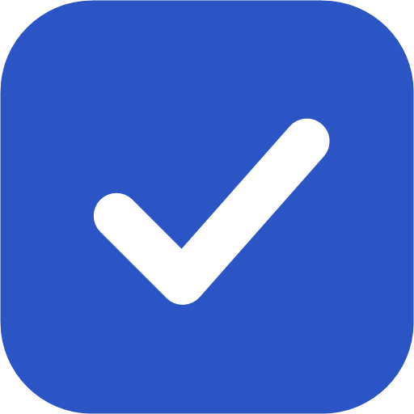

CheckpointApp desktop cho Windows và Linux (Bazzite, SteamOS…). Backup và restore save game vào chính Google Drive của bạn, kể cả khi Steam chạy offline mode.
A personal desktop app that backs up and restores Steam save games to your own Google Drive, so you can continue the same progress on another PC.
Không có server. App đọc thư mục Steam và file save trên máy, nén lại và gửi thẳng vào Drive của bạn.
Chỉ dùng quyền drive.file: app chỉ thấy file do chính nó tạo, không đọc được phần còn lại trong Drive.
So sánh bằng hash nội dung, cảnh báo khi bản trên máy mới hơn bản cloud, chụp snapshot trước mỗi lần restore, giữ 10 bản gần nhất.
Save từ Windows được ghi đúng vào Proton prefix trên Linux và ngược lại. Vị trí save lấy từ dữ liệu PCGamingWiki của Ludusavi (gần 20.000 game).
Checkpoint_x.y.z_x64-setup.exe và chạy. Windows SmartScreen có thể cảnh báo vì app chưa ký số: bấm More info → Run anyway..AppImage, chuột phải → Properties → Permissions → cho phép chạy (hoặc chmod +x Checkpoint_*.AppImage), rồi mở ở Desktop Mode.Xem phần Kết nối Google Drive bên dưới. Mất khoảng 5–10 phút.
| Trạng thái | Nghĩa là | Nên làm |
|---|---|---|
| Đã đồng bộ | Save trên máy giống hệt bản mới nhất trên cloud. | Không cần làm gì. |
| Local mới hơn | Bạn vừa chơi trên máy này. | Backup. |
| Cloud mới hơn | Máy khác đã backup tiến trình mới. | Restore. |
| Xung đột | Cả máy này lẫn cloud đều đổi từ lần đồng bộ trước. | Mở Restore, so ngày, chọn giữ một bản. Bản kia vẫn còn trong lịch sử. |
| Khác nhau | Máy này chưa đồng bộ game này lần nào. | So ngày trong hộp thoại rồi quyết định. |
| Chưa rõ vị trí save | Game không có trong manifest. | Chưa hỗ trợ tự khai báo (sắp có). |
Checkpoint dùng rclone để nói chuyện với Google Drive. Client ID dùng chung của rclone đang bị Google giới hạn rất chậm và sắp ngừng, nên bạn cần tạo Client ID riêng trong Google Cloud. Miễn phí, và chỉ bạn dùng.
checkpoint-rclone. Organization để No organization. Bấm Create, rồi chọn project vừa tạo ở ô chọn project trên cùng.Checkpoint. User support email và Contact email: email của bạn. Audience: chọn External. Đồng ý điều khoản, bấm Create.https://checkpoint.vercel.app/
Privacy policy linkhttps://checkpoint.vercel.app/privacy
Terms of service linkhttps://checkpoint.vercel.app/terms
Authorized domainscheckpoint.vercel.app
drive.file không phải quyền nhạy cảm.
….apps.googleusercontent.com) và Client secret (dạng GOCSPX-…). Bấm Download JSON để giữ lại, vì Google chỉ hiện secret một lần.drive.file, Client ID khác sẽ không thấy file do client kia tạo.Checkpoint trong Google Drive, và thu hồi quyền ở myaccount.google.com/permissions.%LOCALAPPDATA%\Checkpoint\snapshots (Linux: ~/.local/share/Checkpoint/snapshots).Checkpoint requests the Google Drive scope https://www.googleapis.com/auth/drive.file only to create, read and update the backup files it creates in a folder named Checkpoint in the user's own Google Drive. Data is transferred directly between the user's computer and Google. It is not sent to any server operated by the developer and is not shared with anyone. See the Privacy Policy.